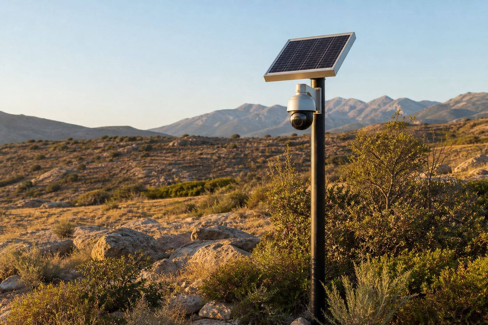

Caméras solaires
Des solutions autonomes lorsque le raccordement électrique n'est pas disponible, sous réserve des conditions d'ensoleillement du site.
Bienvenue
Je peux expliquer les services InfoServ2A, trouver la bonne rubrique et naviguer avec vous. Vous gardez toujours la main.
Le microphone n’est activé qu’après votre action. Le mode local n’envoie aucune conversation à un serveur.
Corse-du-Sud
INFOSERV2A installe des solutions de vidéosurveillance pour les maisons, commerces, entreprises, chantiers, terrains isolés et résidences secondaires, de Solenzara à Bonifacio.

Que vous souhaitiez une caméra de maison à Porto-Vecchio, une vidéosurveillance de commerce en Corse-du-Sud ou une caméra extérieure pour une résidence secondaire, INFOSERV2A étudie d'abord le besoin, puis fournit le matériel, l'installe et le met en service.
Zones blanches & sites isolés
INFOSERV2A propose des caméras solaires autonomes, des batteries et une connexion 4G/5G pour fonctionner sans fibre. La consultation se fait à distance, depuis un smartphone, avec notifications et stockage adaptés au site.
Des solutions autonomes lorsque le raccordement électrique n'est pas disponible, sous réserve des conditions d'ensoleillement du site.
Une caméra 4G pour terrain isolé ou une vidéosurveillance de chantier en Corse peut s'appuyer sur le réseau mobile.
Consultation à distance, notifications et historique des captures selon la configuration retenue.
INFOSERV2A fournit le matériel. Vous n'avez pas à acheter vous-même vos caméras.

Un abonnement de stockage peut être proposé sur devis, selon le nombre de caméras, la durée de conservation et le volume nécessaire. INFOSERV2A ne propose pas de contrat de maintenance périodique des caméras.
Caméra sans électricité en Corse, vidéosurveillance de maison, caméra de commerce à Porto-Vecchio, installation sur chantier : chaque projet est étudié selon l'accès, la couverture réseau et les contraintes du terrain.
Décrivez le site et le contexte. Proposition claire, sans engagement.